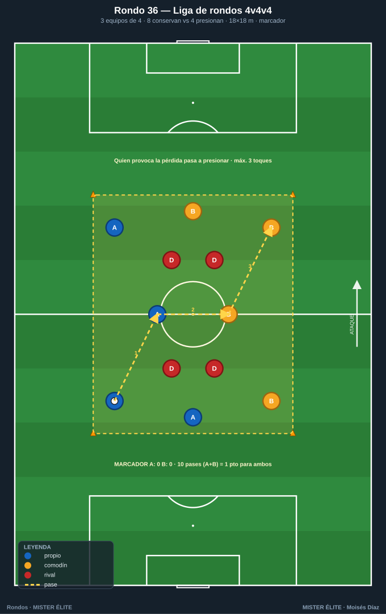
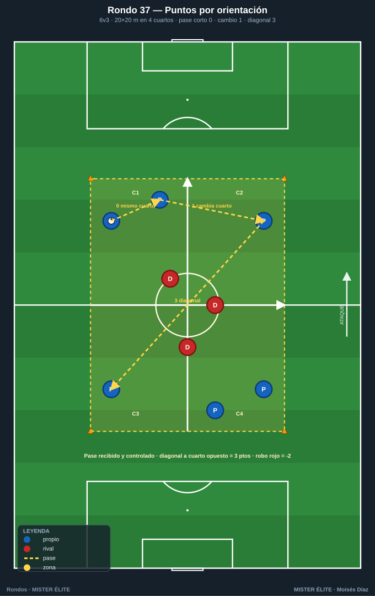
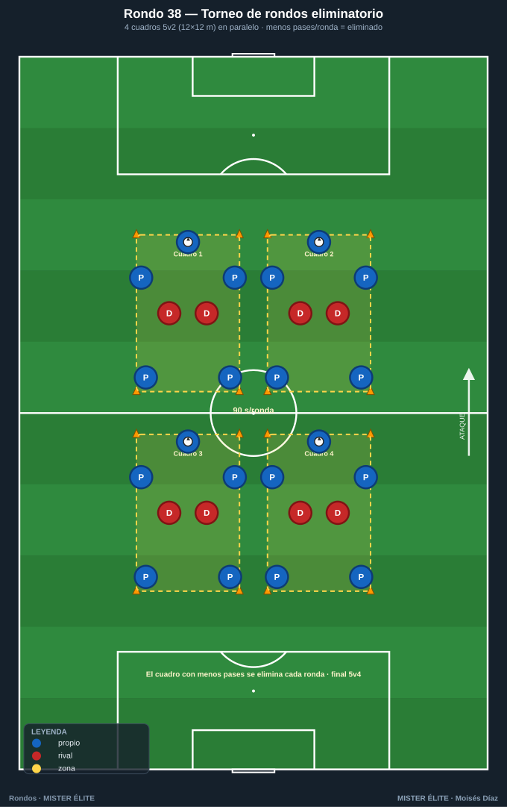
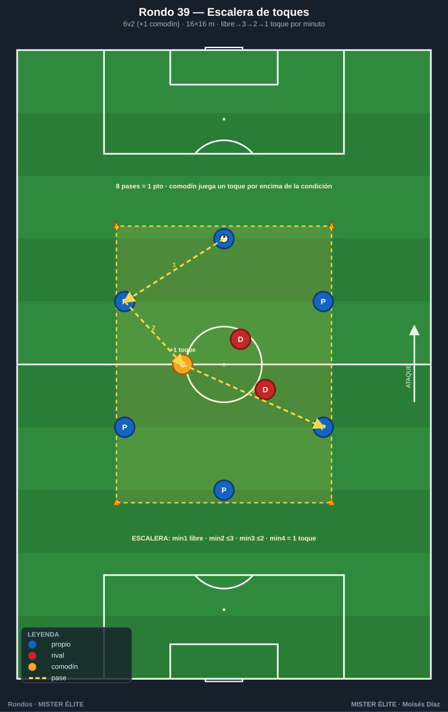
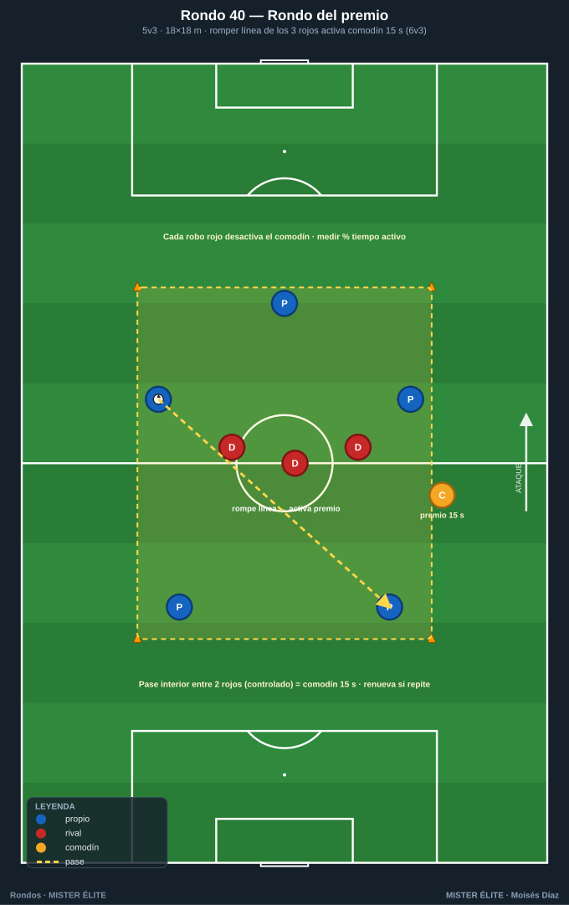
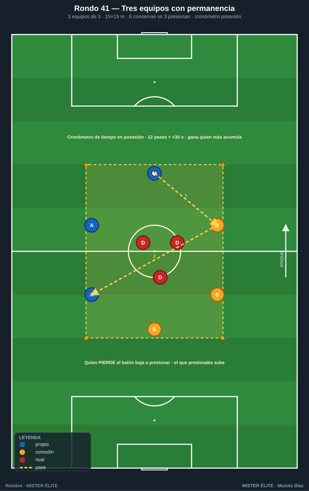
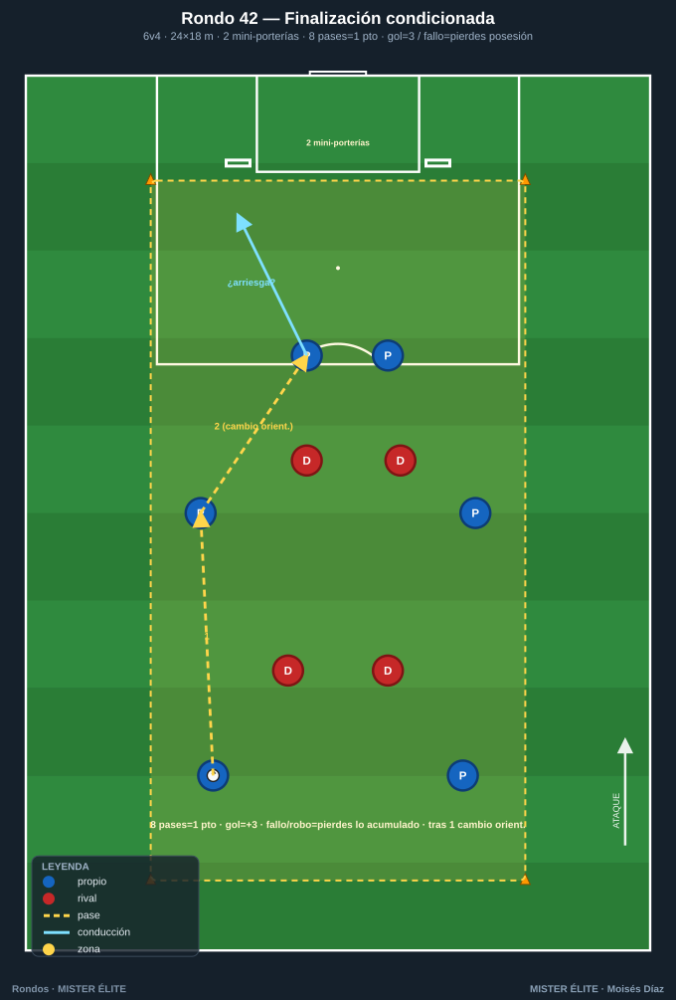
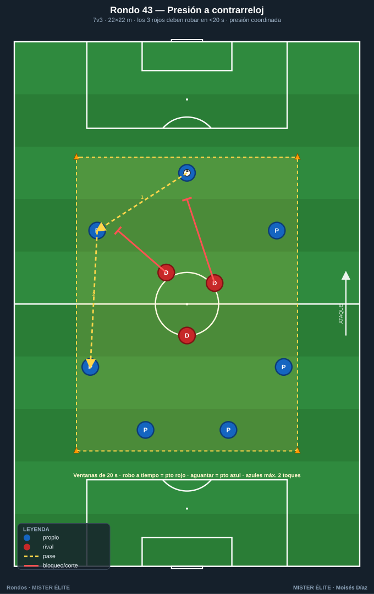

Familia 6 · Competitivos y condicionados (Rondos 36–43)
Las dos fases con marcador, toma de decisión bajo presión, transiciones. Lo más cercano al partido: tensión competitiva real.
Notación: poseedores = azules, defensores = rojos, comodines = ámbar. Espacio con conos; flechas según
README.
Rondo 36 — "Liga de rondos 4 v 4 v 4" (rotación por equipos)
Objetivo - Táctico: competir conservando y presionando con rotación; mentalidad competitiva; cambio rápido de rol poseedor↔presionador.
Organización - Relación: 3 equipos de 4 (azul A, azul B con petos distintos, rojo) en cuadro de 18×18 m. Dos equipos conservan (8 v 4) y uno presiona. - Material: 8 conos, 3 juegos de petos, balones, pizarra de marcador.

Desarrollo 1. Dos equipos juntan 8 jugadores que conservan ante los 4 que presionan. 2. Cada 10 pases de los poseedores = 1 punto para AMBOS equipos poseedores. 3. Si los presionadores roban (o el balón sale), entra a presionar el equipo que perdió el balón y los presionadores pasan a conservar. Gana quien acumule más puntos.
Provocaciones (medibles) - 10 pases = 1 punto para los dos equipos que poseen. - El equipo que provoca la pérdida pasa a presionar. - Máx. 3 toques por jugador. - Marcador visible; "minijornadas" de 3 min.
Variantes (fácil → difícil) - Fácil: 8 pases por punto, toques libres. - Medio: la descrita. - Difícil: 2 toques máximo y los presionadores roban con solo tocar el balón fuera.
Coaching - Comunicación entre los dos equipos poseedores (juegan juntos un momento); concentración para no ser el que pierde; al presionar, robar en bloque, no individualmente.
Duración / series: 5 minijornadas de 3 min. Total ~20 min con marcador acumulado.
Rondo 37 — "Rondo con puntos por orientación"
Objetivo - Táctico: premiar el juego orientado y el cambio de orientación; un sistema de puntos que recompensa decisiones de calidad, no solo conservar.
Organización - Relación: 6 v 3 en cuadro de 20×20 m dividido visualmente en 4 cuartos con conos de color. - Material: 8 conos perimetrales + 4 conos de color interiores, petos, balones, marcador.

Desarrollo Rondo normal con puntuación condicionada al valor del pase: - Pase corto dentro del mismo cuarto = 0 puntos. - Pase que cambia de cuarto = 1 punto. - Pase que cruza en diagonal a un cuarto opuesto = 3 puntos. Los rojos roban; cada robo resta 2 puntos al marcador azul. Se acumula por serie.
Provocaciones (medibles) - Solo el pase recibido y controlado suma. - Diagonal larga (cuarto a cuarto opuesto) = 3 puntos. - Cada robo de los rojos = –2 al azul. - Objetivo de serie: superar 15 puntos = los rojos hacen prenda física.
Variantes (fácil → difícil) - Fácil: 7v2, sin penalización por robo. - Medio: la descrita. - Difícil: 6v4 y los cambios diagonales deben ser antes del 3.er toque del equipo.
Coaching - Buscar siempre el pase de más valor disponible (escanear antes de recibir); no abusar del pase de seguridad; el cambio diagonal exige que alguien se ofrezca en el cuarto opuesto.
Duración / series: 4 series de 3 min, 90 s descanso. Total ~18 min.
Rondo 38 — "Torneo de rondos eliminatorio"
Objetivo - Táctico: alta intensidad competitiva por eliminación; gestionar la presión del marcador y el error que elimina.
Organización - Relación: 4 cuadros de 5 v 2 simultáneos (12×12 m cada uno). - Material: 16 conos (4 cuadros), petos, balones, cronómetro.

Desarrollo 1. Formato torneo a rondas. En cada ronda de 90 s, el equipo poseedor de cada cuadro intenta encadenar el máximo de pases. 2. El cuadro con menos pases acumulados queda eliminado (sus jugadores pasan a presionar en los cuadros restantes). 3. Se reduce hasta una final de un solo cuadro con relación ajustada (p. ej. 5 v 4). Gana el último equipo en pie.
Provocaciones (medibles) - Cada ronda dura 90 s; se cuenta el máximo de pases consecutivos por cuadro. - El cuadro con menor marca se elimina cada ronda. - Una pérdida reinicia la cuenta a 0. - En la final, relación numérica más exigente.
Variantes (fácil → difícil) - Fácil: rondas de 2 min, sin reinicio total al perder (solo resta). - Medio: la descrita. - Difícil: rondas de 60 s y los eliminados presionan de forma agresiva.
Coaching - Gestionar nervios al ir por detrás; calidad antes que prisa; en la final, leer la presión extra de los eliminados.
Duración / series: torneo completo ~16–20 min según nº de rondas.
Rondo 39 — "Rondo condicionado por toques (escalera)"
Objetivo - Táctico: adaptarse a una restricción de toques creciente; mejorar el control orientado y la velocidad de circulación bajo condición.
Organización - Relación: 6 v 2 (+1 comodín) en cuadro de 16×16 m. - Material: 8 conos, petos, balones, marcador/cartel de toques.

Desarrollo Rondo con "escalera de toques" que cambia cada minuto: minuto 1 libre, minuto 2 máx. 3, minuto 3 máx. 2, minuto 4 a 1 toque obligatorio. El equipo poseedor suma 1 punto por cada 8 pases sin pérdida; el reto es mantener el rendimiento al apretar la restricción. El comodín ámbar siempre juega un toque por encima de la condición.
Provocaciones (medibles) - Restricción de toques decreciente cada minuto (libre→3→2→1). - 8 pases = 1 punto; un toque de más = pérdida + un azul al medio. - Comodín juega +1 toque respecto a la condición vigente. - Récord de la sesión: máxima racha a 1 toque.
Variantes (fácil → difícil) - Fácil: escalera libre→3→2 (sin llegar al 1 toque). - Medio: la descrita. - Difícil: 6v3, escalera más rápida (cada 45 s) y sin comodín.
Coaching - Anticipar la condición de toques que viene; primer control que ya orienta hacia el siguiente pase; cuanto menos toque, más importa el desmarque de apoyo previo.
Duración / series: 3 bloques de 4 min (una escalera por bloque), 90 s descanso. Total ~16 min.
Rondo 40 — "Rondo del premio: gana espacio, gana ventaja"
Objetivo - Táctico: asociar la calidad del juego a una ventaja tangible; condicionante que premia romper líneas con superioridad creada.
Organización - Relación: 5 v 3 en cuadro de 18×18 m con un comodín ámbar "de premio" en banda que se activa. - Material: 8 conos, petos, balones, marcador.

Desarrollo Rondo 5v3. Cada vez que los azules logran un pase interior que rompe la línea de los 3 rojos (entre dos defensores), se activa el comodín de premio durante 15 s, convirtiendo el rondo en 6v3. Si pasan 15 s sin romper línea, el comodín se desactiva. Objetivo: mantener el comodín activo el mayor tiempo posible encadenando pases que rompen líneas.
Provocaciones (medibles) - Pase que rompe línea (entre dos rojos, recibido y controlado) = activa comodín 15 s. - Romper línea de nuevo dentro de los 15 s = renueva el tiempo. - Cada robo rojo desactiva el comodín inmediatamente. - Medir el % de tiempo con comodín activo por serie.
Variantes (fácil → difícil) - Fácil: comodín activo 25 s, premio por cualquier cambio de orientación. - Medio: la descrita. - Difícil: 5v4 y el comodín solo dura 10 s.
Coaching - Generar la línea de pase interior fijando con pases laterales; reconocer la ventana entre defensores; aprovechar de inmediato la superioridad del premio para volver a romper.
Duración / series: 4 series de 3 min, 90 s descanso. Total ~18 min.
Rondo 41 — "Rondo a tres equipos con permanencia"
Objetivo - Táctico: competir por permanecer en posesión; intensidad y concentración para no caer al medio; presión coordinada para subir.
Organización - Relación: 3 equipos de 3 en cuadro de 15×15 m (relación 6 v 3). - Material: 8 conos, 3 juegos de petos, balones, marcador.

Desarrollo Dos equipos conservan (6) y uno presiona (3). Regla de permanencia: el equipo cuyo jugador pierde el balón baja a presionar; el que presionaba sube a conservar. Cada equipo lleva su contador de tiempo total en posesión: gana quien acumule más minutos arriba.
Provocaciones (medibles) - El responsable de la pérdida baja a presionar (individual o por equipo según versión). - Se cronometra el tiempo en posesión de cada equipo. - Robar = subir; el equipo que sube reinicia con balón. - Bonus: 12 pases seguidos = 30 s extra de "tiempo en posesión".
Variantes (fácil → difícil) - Fácil: baja el equipo completo, sin cronómetro. - Medio: la descrita con cronómetro. - Difícil: baja solo el jugador que pierde (rondo numéricamente cambiante, 6v3 → 5v4…).
Coaching - Responsabilidad individual en la pérdida; al presionar, salir los 3 a una para subir rápido; gestionar el riesgo (no arriesgar el pase que te puede mandar abajo en momento clave).
Duración / series: 1 bloque continuo de 12–15 min con marcador acumulado.
Rondo 42 — "Rondo bonificado por finalización condicionada"
Objetivo - Táctico: combinar conservación competitiva con condición de finalización; decidir cuándo arriesgar el pase de gol.
Organización - Relación: 6 v 4 en zona de 24×18 m con 2 mini-porterías (2 m, sin portero) en un fondo. - Material: 8 conos, 2 mini-porterías, petos, balones, marcador.

Desarrollo Los azules conservan y suman 1 punto cada 8 pases. En cualquier momento pueden arriesgar a finalizar en una mini-portería: gol = 3 puntos, pero si fallan o los rojos roban el intento, pierden los puntos acumulados de esa posesión (mecánica "banca o arriesga"). Los rojos, si roban, finalizan a la portería que defienden los azules.
Provocaciones (medibles) - 8 pases = 1 punto (se acumulan en la posesión). - Finalizar: gol = +3; fallo/robo = se pierden los puntos de la posesión. - Robo de rojos con finalización = puntos para rojos. - Condición: solo se finaliza tras mínimo 1 cambio de orientación en la posesión.
Variantes (fácil → difícil) - Fácil: el fallo no resta lo acumulado; porterías más anchas. - Medio: la descrita. - Difícil: el gol exige asistencia de primeras (pase-gol al primer toque del rematador).
Coaching - Leer el momento de arriesgar (riesgo-recompensa); no malgastar una posesión larga con un remate precipitado; el cambio de orientación previo abre el lado para finalizar.
Duración / series: 4 series de 3 min, 90 s descanso. Total ~18 min.
Rondo 43 — "Rondo de alta intensidad: presión a contrarreloj"
Objetivo - Táctico: intensidad máxima en la presión y resistencia específica; recuperar lo antes posible; condicionante temporal para el equipo defensor.
Organización - Relación: 7 v 3 en cuadro de 22×22 m. - Material: 8 conos, petos, balones, cronómetro, marcador.

Desarrollo Los 3 rojos tienen el reto a contrarreloj: robar el balón en menos de 20 s. Si lo logran, suman 1 punto y descansa la pareja que más corrió; si no, los azules suman 1 punto y los rojos siguen otra ventana. Se rotan los tríos de presión cada 2 ventanas. El espacio amplio obliga a recorrer mucho campo presionando.
Provocaciones (medibles) - Ventanas de 20 s: robo a tiempo = punto rojo; aguantar = punto azul. - Rotación de presionadores cada 2 ventanas. - Azules a máx. 2 toques (circular rápido, exigir más a la presión). - Registrar nº de robos dentro de tiempo por trío.
Variantes (fácil → difícil) - Fácil: ventana de 30 s, espacio más pequeño. - Medio: la descrita. - Difícil: ventana de 15 s y cuadro de 25×25 m.
Coaching - Presión coordinada: orientar el robo hacia una zona, no perseguir el balón en desorden; cubrir líneas de pase mientras se aprieta; los azules circulan rápido para fundir a la presión.
Duración / series: 6 ventanas por bloque, 2 bloques, 2 min descanso entre bloques. Total ~16 min muy intensos.
MISTER ÉLITE — Moisés Díaz